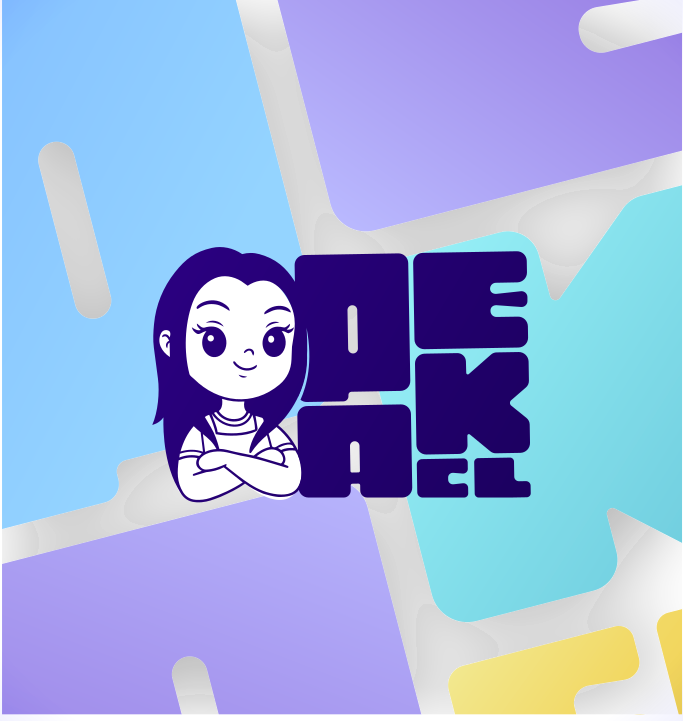

Site web, identité visuelle, réseaux sociaux : une seule interlocutrice,
un plan clair, des livrables concrets. Et quelqu'un qui décroche quand vous appelez.

Un seul interlocuteur, du premier café à la mise en ligne.
Un devis annoncé d'avance et des délais tenus, sans mauvaise surprise.
Vous restez autonome : je forme, je documente, vous gardez la main.
Premier pas, sans engagement
Faisons le point : c'est offert.
Scannez le code, ou appelez‑moi : 07 43 51 76 27 peakcl.com · peakcl73@gmail.com
EI Charlotte Lacroix — PeakCL · SIRET 884 220 054 00024 · APE 6201Z ·
[adresse de domiciliation à compléter]
Imprimé par : [nom et adresse de l'imprimeur] · Ne pas jeter sur la voie publique.
Ce que je fais pour vous
Quatre façons de travailler ensemble.
Sites web sur mesure
Vitrine, e‑commerce, refonte. Rapide et bien référencé.
Community management
Rester visible sans y passer vos soirées.
Design graphique
Logo, charte, supports print cohérents.
Automatisation & IA
Devis, rappels, relances : en pilote automatique.
Notre approche en 3 étapes simples
1On se parle20 min pour cerner votre priorité n°1.
2Je cadreUn plan écrit, un budget, une date.
3Je crée, vous validezLivré, formé, documenté.
Charlotte a très vite compris mes besoins et m'a proposé une direction plus moderne,
plus claire et plus adaptée à mon activité.
Charlotte Lacroix
PeakCL · com' & web en Savoie
07 43 51 76 27
@peakcl73
peakcl73@gmail.com
PeakCL73
peakcl.com
charlotte-lacroix-peakcl
Albertville & toute la Savoie
On en parle ? 20 min, offertes
EI Charlotte Lacroix — PeakCL · SIRET 884 220 054 00024 · APE 6201Z ·
[adresse de domiciliation à compléter]
Imprimé par : [nom et adresse de l'imprimeur] · Ne pas jeter sur la voie publique.